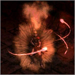
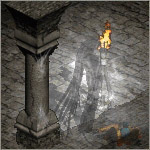
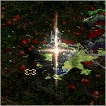
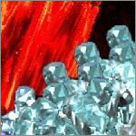

MINIGAMES
Minigames are small challenges you can do in Terror and/or Destruction difficulty. The reward for all of these is the same: the maximum amount of points you can put into your skills is raised by 1 for each completed minigame. This bonus is applied to the Class Charm you picked up in Kurast 3000 BA.
You need your Class Charm
This challenge requires you to have your Class Charm. This is a charm that
drops in the Kurast 3000 BA uberlevel. If you did the Ennead Challenge, you already
have one.
If not, see THIS PAGE for more information about Kurast 3000 BA.
Killing a Boss
This challenge requires you to 'kill' a boss. This means that you need to be
physically present at the battle and near the boss when it dies before
you can use the cube recipe that grants you the reward.
If you succeed in killing the target monster, you get a whirling red overlay that looks like three rotating bolts:

You now have 30 seconds to perform the cube recipe. If you are too slow and the red overlay vanishes, you have to do it again!
Warning: This does not work if the monster is killed by reflected damage, due to a Diablo II engine limitation. Please use different means of killing the target.
MINIGAME 1: WITCH QUEEN
Simply slay the Countess or any of her minions on Terror difficulty to receive a red swirly overlay. Quickly cube your Class Charm with an Eth rune while the overlay is visible to receive a bonus. You have 30 seconds. Easy you say? Be afraid... the inhabitants of the deepest Tower level are a bit unusual.

This upgrade recipe adds the following bonus:
Maximum Skill Level Increased by 1
See THIS PAGE for more information about witches.
MINIGAME 2: CROWNED
Find a witch anywhere on Terror difficulty, except in the Countess tower. Witches generally appear in outdoors areas. Inch as close as you dare to a witch without waking her up... there is a chance that you will see an unmistakeable star effect just before you get close enough to get eaten by the witch.
This only works on 15% of the witches - if you see no stars, run away before the witch pounces! Cube your Class Charm with a Thul rune while the overlay is on you to receive a bonus.
NOTE: The chance for the star resets upon entering an area.

This upgrade recipe adds the following bonus:
Maximum Skill Level Increased by 1
See THIS PAGE for more information about witches.
MINIGAME 3: MIRROR MIRROR
Do the Baal fight on Terror or Destruction difficulty and instead of killing Baal, kill his Shardspawn minions. Each kill brings a 1% chance to gain a red swirly overlay, so you may have to let him summon a few. Cube your class charm with a Lem rune while the swirls are active to receive a bonus. You have 30 seconds before the swirls vanish.

This upgrade recipe adds the following bonus:
Maximum Skill Level Increased by 1